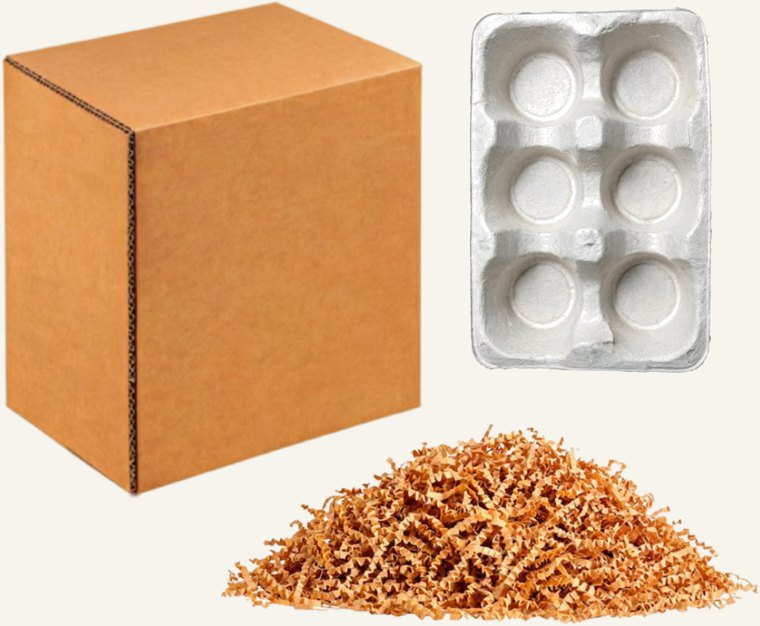
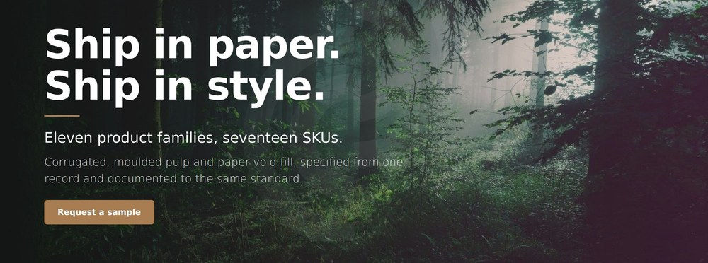

Selected work
Employer projects are described rather than linked — no client data, no credentials, no proprietary figures.
Work for my employer, demonstrated on a stand-in brand
Marketing technology and analytics for my employer, built in my first four months there.
What is CambiumPak?
It isn't a real company. I'm proud of the work I did for my employer and I can't show you any of it — it's confidential. So I built a stand-in: an imaginary company with a similar structure and similar needs, and then built the same systems and tools there that I built for my employer. Everything below is real work, shown on invented products.

What was asked for → what I built
Each one came in as a request for a single deliverable.

A measurement capability from zero
Tracking architecture and governance, live before a relaunch — because that window closes on launch day. Every tool here is measured by it.
ga4 · tag manager · data api · read →
A website reimagining, without voiding the contract
A CEO's vision, an agency-built site still under warranty, and a deadline. The first move was reading the agreement.
production css v2.20 · vendor management · read →
The product deck generator
42 minutes a product by hand, across a 27-product queue. Now a URL, an extraction you approve, and a deck.
serverless · llm extraction · office open xml · read →
The email campaign generator
75 minutes a campaign, and a UTM convention nobody could follow consistently. The opt-out is now a constant, the audit is code.
utm taxonomy · outlook html · compliance · read →btw — I built the brand too
Mark, palette, five invented certification marks and a rulebook, in two days. I didn't build my employer's brand; this exists so the tools have one to enforce.
For clients and my studio
Brand, growth and content operations.

For learning and for fun
Two projects you can open and use right now.

Drive the 505
A learning app for nervous drivers in Albuquerque. Modules, flashcards, quizzes, and an interactive map of the city grid.
javascript · interactive svg · playable · read → research → prototype
Bookspot
An app for readers who want to visit real places from fiction. Eight interviews, ten versions of one flow, 40+ screens, clickable prototype.
research · prototype · usability testing · read →Workflow documentation. The product page launch process written up end to end in five parts — image production, CMS build, asset linking, URL structure, project tracking.
Production and print. Brand-standard creative across digital, social, email and print, including packaging QR systems generated in-file with standardised UTM tagging.
What I work in
If it's on this list I've used it to ship something.
analytics engineering
GA4 property architecture · Tag Manager governance and migration · custom JavaScript, RegEx table, DOM element and element visibility variables · custom dimension registration · preview-mode QA and hit-level verification · relaunch baseline preservation · UTM taxonomy and enforcement
backend & serverless
Serverless API endpoints · edge middleware authentication · JWT construction and RSA signing · OAuth token exchange · multi-tier caching · request batching · least-privilege service accounts · third-party and LLM API integration
ai implementation
LLM integration for extraction and generation · prompt engineering as enforceable specification · anti-hallucination constraints · deterministic verification of model output · internal AI enablement
marketing operations
Email and lifecycle marketing · marketing automation · HubSpot (certification in progress) · Buffer · ecommerce operations · campaign SOPs · link tracking · reporting and data visualisation · Meta Ads Manager
front end, web & documents
HTML · production CSS architecture · JavaScript · React · browser canvas processing · Office Open XML manipulation · email HTML with MSO conditionals and VML · WordPress and page builders · Webflow · Squarespace · GitHub · Vercel
design & certifications
Figma · Illustrator, Photoshop, After Effects, InDesign · brand systems · long-document typography · art direction · copywriting — Google Digital Marketing & Ecommerce 2025 · Google Analytics Individual Qualification 2025 · HubSpot Marketing in progress · UX and UI Design, UC Berkeley Extension 2022
How I got here
I spent the first decade of my career making things — illustration, design, video, teaching graduate students how to tell a story in pictures. I got tired of handing work over and never finding out whether it moved anything, so I learned the measurement side.
I was hired in March 2026 as a production designer. Within four months the job included the website, the analytics build, and shipping internal software, because those things needed doing and there was nobody else to do them. No development background, no developer, no budget beyond a subscription.
None of it happened alone. The tracking ran through IT for access and the agency for implementation. The website work stayed inside a contract boundary agreed with the vendor. Both tools shipped with written procedures.
I'm in Albuquerque, work well remotely, and I'm looking for marketing operations, analytics or martech roles where this is the job rather than the thing I do after hours.
open to marketing operations, analytics and martech roles
Let's talk.
Remote, or Albuquerque and hybrid. Happy to walk through the architecture behind any of this.